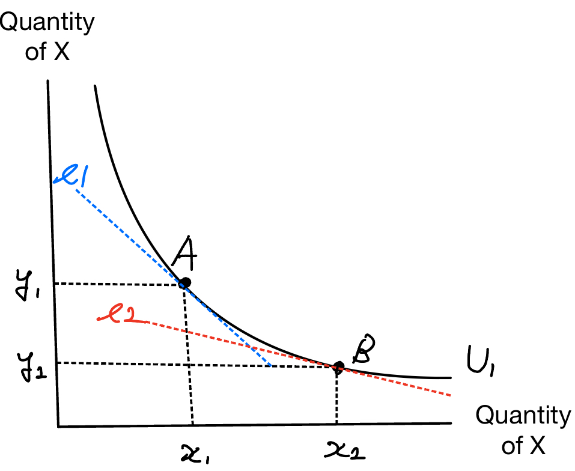
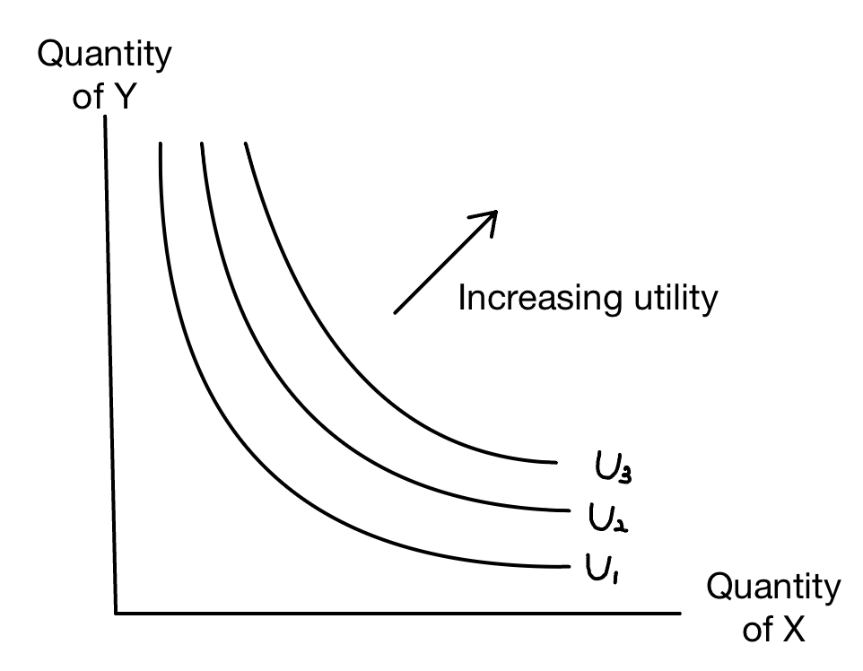

Lab 10: Consumer Choice and Demand - Part 2
APEC 1101 - Applied Economics, University of Minnesota
Announcement
- Assignment 3 is due on Wednesday, November 20.
- Please Submit your assignment on Canvas!!.
- On the Canvas page, go “Assignments” -> “Extra Credit Assignment” -> “Start Assignment” -> Click “Submit Assignment” after you uploaded your assignment.
- You can take photos, converted them to PDF, and upload it.
Consumer Choice and Demand
Important Concepts
- Utility
- Marginal utility
- Law of diminishing marginal utility
- According to the rational choice rule, how does a consumer choose the combination of goods and services?
- Income Effects (new!)
- Substitution Effects (new!)
- Indifference curve (new!)
- Marginal rate of substitution (new!)
- Law of diminishing marginal rate of substitution (new!)
Today’s Goals
- To be able to solve the utility maximizing problem using the rational choice rule.
- To understand the concepts of indifference curve and the marginal rate of substitution
- To be able to find the marginal rate of substitution at the utility-maximizing combination.
Outlines
- In-class Exercise Problem 1
- Review of the concept of indifference curve and the marginal rate of substitution
- In-class Exercise Problem 4a
- In-class Exercise Problem 2 and 3 (if we have time)
Let me know if you have not received the today’s handout.
In-class Exercise Problem 1
| Chicken Sandwiches (CS) | Utility from CS | French Fries (FF) | Utility from FF |
|---|---|---|---|
| 0 | 0 | 0 | 0 |
| 1 | 15 | 1 | 11 |
| 2 | 25 | 2 | 21 |
| 3 | 31 | 3 | 30 |
| 4 | 34 | 4 | 37 |
| 5 | 36 | 5 | 42 |
| 6 | 47 | ||
| 7 | 51 | ||
| 8 | 53 | ||
| 9 | 55 | ||
| 10 | 56 |
A Chicken Sandwich costs $6, a French Fries costs $2 per serving, and income is $18.
State the budget constraint. Determine the utility-maximizing combination of Chicken Sandwiches and French Fries.
What is the marginal rate of substitution of French Fries for Chicken Sandwiches at this utility-maximizing combination?
In-class Exercise Problem 1 - Modified (Cont’d)
- What is the marginal rate of substitution of French Fries for Chicken Sandwiches at this utility-maximizing combination?
Before we start solving the problem, I want to check some important concepts with you.
Indifference Curve
An indifference curve represents all the combinations of goods that give the consumer the same level of total utility.
- You can think of indifference curves like contour lines on a map in that they represent lines of equal “altitude” of utility.
Important Characteristics that yrou should know (important!!)
- The shape of an indifference curve is convex to the origin (downward sloping).
- The absolute value of the slope of the indifference curve is the marginal rate of substitution (MRS) and it diminishes as we move down along the curve. (Diminishing Marginal Rate of Substitution)
- The level of utility represented by each curve increases as we move in a northeast direction.
MRS is the Slope of the Indifference Curve
\[\begin{align*} \left. MRS \text{ for good X for good Y} = \frac{\Delta Y}{\Delta X} \right \vert_{U=\bar{u}} = \left| \frac{MU_X}{MU_Y} \right| \end{align*}\]
- The MRS of good X for good Y indicates how much of good Y a consumer is willing to give up in exchange for one more unit of good X while maintaining the same level of utility.
→ For example, if the MRS of good X for good Y is 2, the consumer is willing to give up 2 units of good Y to get one more unit of good X.
- The MRS diminishes as we move down along the curve. (i.e., Diminishing Marginal Rate of Substitution)
→ For example. If you have less amount of French Fries, you are willing to give up more Chicken Sandwiches to get one more Chicken Sandwiches.

\[|\text{Slope of } l_1| > |\text{Slope of } l_2|\] \[ \rightarrow MRS_{l_1} > MRS_{l_2}\]
Indifference Curve Map
There are lots of indifference curves representing different levels of utility!
Utility Maximization: Indifference Curve and Budget Constraint
So far, we calculated the utility-maximizing combination by comparing the ratio of marginal utility to price for each good, and we know that consumer equates the marginal utility per dollar spent on each good.
In other words, at the utility maximizing combination, the following relationship holds for any two goods X and Y:
\[\begin{align*} \frac{MU_X}{P_X} = \frac{MU_Y}{P_Y} \end{align*}\]
When we rearrange the above equation, we get:
\[\begin{align*} \frac{MU_X}{MU_Y} = \frac{P_X}{P_Y} \end{align*}\]
Utility Maximization in term of Indifference Curve and Budget Constraint
So far, we calculated the utility-maximizing combination by comparing the ratio of marginal utility to price for each good, and we know that consumer equates the marginal utility per dollar spent on each good.
In other words, at the utility maximizing combination, the following relationship holds for any two goods X and Y:
\[\begin{align*} \frac{MU_X}{P_X} = \frac{MU_Y}{P_Y} \end{align*}\]
When we rearrange the above equation, we get:
\[\begin{align*} \underbrace{\frac{MU_X}{MU_Y}}_{\text{MRS (the slope of the indifference curve)}} = \underbrace{\frac{P_X}{P_Y}}_{\text{the slope of the budget constraint}} \end{align*}\]
Utility Maximization
At the utility maximizing combination, the consumer’s indifference curve is tangent to the budget constraint. In other words, the MRS at the utility-maximizing combination is equal to the slope of the budget constraint!
Graphical Explanation

Utility Maximizing Combination
Utility is maximized when the indifference curve is tangent to the budget constraint.

Key Takeaways
I want you to understand the following concepts:
- The marginal rate of substitution (MRS) is the slope of the indifference curve.
- and it represents rate at which a consumer is willing to trade one good for another while maintaining the same level of utility.
When the consumer is maximizing utility, his indifference curve is tangent to the budget constraint.
Therefore, the MRS at the utility-maximizing combination is equal to the slope of the budget constraint.
In-class Exercise Problem 1 (Cont’d)
- What is the marginal rate of substitution of French Fries for Chicken Sandwiches at this utility-maximizing combination?
Recall that
The marginal rate of substitution of French Fries for Chicken Sandwiches means how many Chicken Sandwiches the consumer is willing to give up to get one more French Fries while maintaining the same level of utility.
Recall that the MRS equals the same as the slope of the budget constraint at the utility-maximizing combination.
Since the budget constraint is given by: \(2FF + 6 CS \leq 18\), the slope of the budget constraint is \(-1/3\). \[\begin{align*} \text{MRS} = |\text{slope of the budget line} = |-1/3| = 1/3 \end{align*}\]
, meaning that the consumer is willing to give up 3 French Fries to get one more Chicken Sandwiches.
In-class Exercise Problem 4a
Assume Tim purchases milk, and eggs, a gallon of milk costs $5 and each egg costs $1. Assume that Tim’s utility-maximizing combination is (milk, eggs) = (4, 10).
Draw a budget constraint for Tim who has a weekly income of $30. Also, draw an appropriate indifference curve for Tim when he is maximizing his utility (Your indifference curve does not have to be precise, but it should have some specific characteristics).
In-class Exercise Problem 2 and 3 (if we have time)
Suppose Coop allocates his budget of $120 to purchase two goods, T-shirts and CD rentals. A T-shirt costs $8 and a CD rental costs $6.
Draw Coop’s budget constraint. What is the slope of the budget constraint?
Assume for T-shirts, \(MU/P = 5\); for CD rentals, \(MU/P = 4\). Is Coop maximizing his utility? Explain briefly.